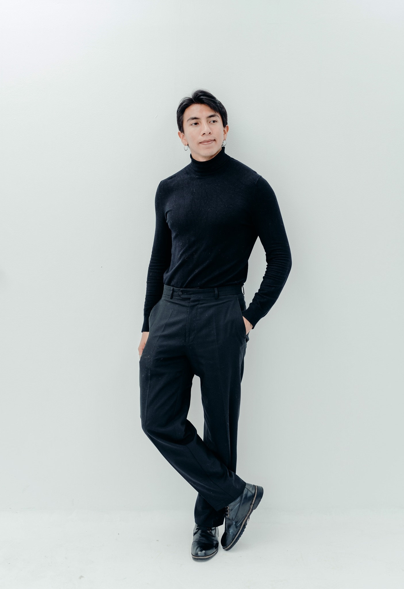

Julián Tusso
Soy diseñador gráfico e ilustrador colombiano. Me especializo en construir imágenes con carácter, identidad y una intención clara detrás de cada decisión visual. Mi trabajo se mueve entre la ilustración, el branding, la diagramación y la dirección gráfica, siempre buscando piezas que se sientan vivas, memorables y bien resueltas.
Llevo más de diez años desarrollando proyectos para sectores editoriales, musicales, publicitarios e institucionales. En ese recorrido he trabajado tanto en encargos profesionales como en procesos personales, donde la exploración visual, la narrativa y la sensibilidad estética tienen un papel central.
Profesional en Diseño Visual, con formación en diseño gráfico, dibujo e ilustración, he colaborado con editoriales, marcas, instituciones y proyectos culturales, manteniendo una práctica que cruza el oficio técnico con una voz visual propia.
Ilustración, branding, dirección visual y proyectos editoriales.
Más de 10 años trabajando en comunicación visual para distintos sectores.
Colombia · Español nativo · Inglés B2.